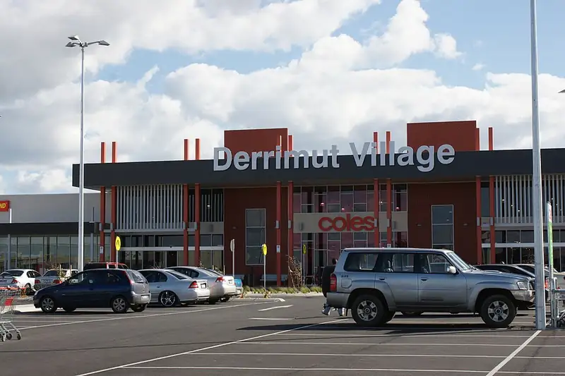

Derrimut Village
Derrimut Village is a shopping centre in Derrimut, in the Brimbank City Council area, handy for a rainy day or a quick stop. Hammerwood Ave/St Leonards Ave (bus) is a 3-minute walk away and the nearest public toilet is about 13 m away.

.jpg){kind=link}
Quick facts
- Address
- 20 Mount Derrimut Road
- Phone
- +61 3 9315 8999
- Toilets
- 13 m away
- Public transport
- Hammerwood Ave/St Leonards Ave, bus (routes 400), 3 min walk
This page has basic info from the map: name, location and type. We have not checked the details yet. Know this place? Tell us.
Details
- Phone
- +61 3 9315 8999 (OpenStreetMap)
- Address
- 20 Mount Derrimut Road (OpenStreetMap)
Questions parents ask
- Where is Derrimut Village?
- Derrimut Village is in Derrimut, Victoria, at 20 Mount Derrimut Road.
- Are there toilets at Derrimut Village?
- The nearest public toilet is about 13 m away.
- How do I get to Derrimut Village by public transport?
- The closest stop is Hammerwood Ave/St Leonards Ave (routes 400), a 3-minute walk.
- What is the phone number for Derrimut Village?
- Call Derrimut Village on +61 3 9315 8999.
Nearby places
- Nando's
Cafe or restaurant · DerrimutToilet nearbyBus 3 min walk
- Domino's
Cafe or restaurant · DerrimutToilet nearbyBus 4 min walk
- Hammerwood Avenue Reserve
Park · DerrimutFreeBus 3 min walk
- Playground at Hammerwood Avenue Reserve
Playground · DerrimutFreeBus 3 min walk
- St Andrews Park
Park · Deer ParkFreeCoach 5 min walk
- Playground at St Andrews Park
Playground · Deer ParkFreeCoach 5 min walk
- Burnside Shopping Centre
Shopping centre · BurnsideBus 1 min walk
- Skate park at Robert Bruce Reserve
Skate, BMX or pump track · Deer ParkToilet nearbyFreeBus 3 min walk